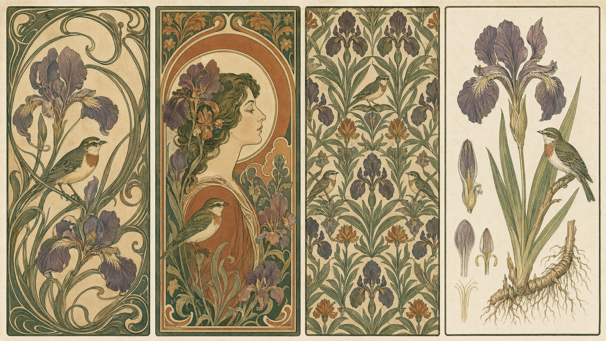

装饰不是"加花边"——它是一套把三维世界压回二维平面的形式法则

写实绘画里，一片叶子长什么样，由叶子决定；装饰绘画里，一片叶子长什么样，由它在画面上要占的那块位置决定。这是整个装饰谱系的地基，也是提示词能不能写对的分水岭。
具体到可执行的层面，"服从平面"意味着四件事同时发生：
这四条直接对应提示词里最有效的四组词。而绝大多数"装饰风"翻车，是因为只写了风格名，没写这四条——模型于是给你一张"有很多花的写实插画"，花很多，但每朵花都有体积、有投影、有景深虚化，装饰性彻底消失。
任何装饰风格的提示词里，这一串都值得常驻：
flat color fills, no rendered volume, no cast shadows, even flat lighting, decorative outline, everything in sharp focus
everything in sharp focus 是最容易被忽略的一条。模型的默认先验是"主体清晰、背景虚化"，而装饰画面里背景和主体一样重要，一虚就散。
新艺术（Art Nouveau，约 1890–1910）在美术史上的位置很清楚，但对我们有用的是它的形式语法，一共四条：
| 形式特征 | 具体几何描述 | 提示词 |
|---|---|---|
| 鞭线 whiplash line | 一条不对称的 S 形长曲线，一端曲率极缓、另一端骤然收紧成钩状，像甩出的鞭梢。它必须是连续的、不可分段的，中途不能出现直线或折角 | long asymmetric whiplash curves, sinuous continuous line |
| 自然形态的程式化 | 取材于藤蔓、鸢尾、百合、孔雀羽、水波、女性长发——共同点是它们本身就自带长曲线，可以被拉成鞭线 | stylised vines, iris and lily motifs, peacock feather forms |
| 平涂色块 + 装饰轮廓线 | 每块颜色内部无渐变，块与块之间用一条粗细基本一致的深色线分隔。这条线不是"物体的边缘"，它是独立的装饰元素，可以自己粗细变化，可以脱离形体去缠绕 | flat color areas separated by a dark contour line |
| 边框包裹 | 画面被一圈装饰性边框围住，边框和内容互相咬合——头发会溢出边框，边框的藤蔓会伸进画面 | enclosed by an ornamental border that interlocks with the subject |
为什么是这四条，而不是"华丽""优雅"这类词？因为前者可以被逐条验证和逐条调整。你拿到一张图，可以问："鞭线在哪？"如果找不到一条贯穿画面的长曲线，那它就不是新艺术，无论它有多少花。
阿尔丰斯·穆夏（Alfons Mucha，1860–1939）的招贴之所以能被"风格化复用"，是因为他自己就把它做成了一套可重复执行的版式——他要在极短周期内为剧院和商品交付大量石版海报，没有条件每张重新构图。这套版式有六个固定件：
| # | 构成件 | 几何/工艺约束 |
|---|---|---|
| 1 | 中心单人 | 竖长画幅（常见 1:2.5 至 1:3 的极窄比例，因为要贴在广告柱上），人物立姿占画高约 3/4，正面或四分之三侧，视线平和、不作戏剧表情 |
| 2 | 圆形／拱形光环 | 人物头部后方一个纯几何的圆盘或马蹄拱，内部填装饰纹样或素色。它的功能是把杂乱的背景切成"圆内／圆外"两个区，给头部一个高对比的衬底 |
| 3 | 植物边框 | 沿画幅四边或仅上下两端，繁复的藤蔓／花环带，密度明显高于画面中部 |
| 4 | 粉彩色域 | 低饱和的赭、鼠尾草绿、藕荷、旧金——这不是审美偏好，是石版套色的成本约束：色版数量有限，且油墨叠印后必然降饱和 |
| 5 | 黑色轮廓线 | 石版印刷有一块"关键版"（key stone）专印线稿，色版套在它上面。所以线是全画统一的深色、粗细稳定 |
| 6 | 装饰性长发 | 头发脱离物理，被当作鞭线的主要载体，向四周蔓延并常与边框、光环缠绕在一起 |
关键判断：这六件里没有一件依赖"穆夏"这个名字。它们全都是可以用形式语言直接说清的几何事实。这就是下面双轨写法的依据。
a young woman standing frontally, holding a spray of lilies, enclosed in a tall narrow poster format, even flat lighting, no cast shadow, in the manner of Alphonse Mucha's 1890s lithographic posters, color lithograph with limited spot colors, visible key-line printing, flat vertical composition, full figure, decorative border --ar 1:3
模型：MJ v8.1 · 画幅 1:3 · --stylize 250
a young woman standing frontally, holding a spray of lilies, her long hair extending into long asymmetric whiplash curves that interlock with the frame, a large plain circular halo disc directly behind her head, a dense ornamental band of stylised vines along the top and bottom edges, flat color fills with no rendered volume, no cast shadows, uniform dark contour line around every shape, muted palette of ochre, sage green, dusty mauve and old gold, color lithograph with limited spot colors, slight ink misregistration, tall narrow poster format, full figure, everything in sharp focus --ar 1:3
模型：MJ v8.1 · 画幅 1:3 · --stylize 150
| 提示词片段 | 它在管哪一层 |
|---|---|
long asymmetric whiplash curves ... interlock with the frame | 形式内核：鞭线 + 边框咬合，一句话解决两条法则 |
a large plain circular halo disc behind her head | 构成件 2。写 plain（素色）很重要，否则模型会把光环画成宗教圣像的放射金光 |
dense ornamental band ... along the top and bottom edges | 构成件 3。指定"顶部和底部"是为了给设计师留出左右的裁切余量 |
uniform dark contour line around every shape | 构成件 5，同时压制模型加渐变的倾向 |
ochre, sage green, dusty mauve, old gold | 构成件 4。用具体色名而不是 pastel——后者会滑向马卡龙糖果色，那是另一个时代的东西 |
slight ink misregistration | 工艺层：套印微错位。这是"石版"和"数字仿石版"最直观的区别（详见第 17 章） |
不只是版权伦理问题，更是控制粒度问题。点名等于把一整个风格向量一次性拽进来：你想要他的构图，但同时也拿到了他的脸型偏好、他的年代、他特定的题材（戏剧海报、香烟广告）。当你要画的是一个科幻题材的装饰海报时，指称会和你的内容打架。
形式语言版是可拆的：不想要圆形光环，就把那一行换成 a tall pointed arch behind her；想要更冷的调子，只改色名那一行。而"in the manner of X"你只能整块删掉或整块保留。
穆夏 1939 年去世，莫里斯 1896 年去世，作为艺术史流派的指称使用是站得住的。但本书的立场是：对在世艺术家，不点名。不是因为模型会拒绝，而是因为——第一，商业交付里这是明确的风险；第二，也更实际：在世艺术家的作品在训练集中通常样本量小且来源杂，指称的稳定性远不如形式描述。想要谁的效果，就去拆解他的形式法则，写出来。这个动作本身也会让你真正学会那个风格。
威廉·莫里斯（William Morris，1834–1896）和工艺美术运动（Arts and Crafts）与新艺术是两回事，虽然常被混为一谈。差别在立场：新艺术拥抱新材料和新工艺，莫里斯则明确反对工业化生产，主张回到手工艺和中世纪的行会传统。这个立场直接决定了画面长什么样。
这不是能力问题，是原则问题。莫里斯反对当时流行的那种"立体感很强的写实花卉壁纸"，理由很实在：墙纸是墙的一部分，墙是平的。在墙上画出有体积、有投影的花，等于在墙上凿了一个假洞，破坏了房间的空间感。所以他的图案一律：平涂、无投影、靠线条和色层交代前后。
这个理由对我们有直接用处——当你要生成的是贴图、背景、包装纹样时，同样的道理成立：任何自带光影方向的图案，一旦铺到有自己光照的三维场景里，就会打架。
莫里斯在 1881 年的设计讲座里反复强调一件事：图案必须有看不见的底层结构线，否则铺开后就是一团糊。他自己的图案基本都是三层叠加：
| 层 | 内容 | 作用 | 提示词 |
|---|---|---|---|
| 底层 | 大波浪茎干（meandering stem），通常是一组上下贯通的粗藤，构成整个单元的骨架 | 决定视线的流动方向，是"节奏"的来源 | a bold meandering stem structure running through the whole field |
| 中层 | 主体叶片／大花，挂在骨架上，尺寸最大，色块最完整 | 承担识别度 | large stylised acanthus leaves growing off the stems |
| 表层 | 小花、浆果、细枝——填补空隙 | 消灭"空洞"，让密度均匀。这一层决定图案铺开后有没有"斑块感" | small blossoms and berries filling the gaps evenly |
三层缺一不可。只写"花草纹样"，模型会给你一堆大小接近、间距随机的花——铺开后必然出现忽疏忽密的斑块。密度均匀是四方连续的第一质量指标，而它靠的是表层填充。
纺织和壁纸行业的重复方式有名字，模型认这些名字：
| 排列 | 结构 | 用途 |
|---|---|---|
straight repeat／正接 | 单元横平竖直对齐 | 几何图案；有机纹样用它会出现明显的"行列感" |
half-drop repeat／半错位 | 相邻列上下错开半个单元高 | 植物纹样的标准解，打断竖向对齐，视觉上更"自然" |
brick repeat／砖砌 | 相邻行左右错开半个单元宽 | 横向母题（如横向的枝条） |
mirror repeat／对称 | 单元镜像拼接 | 会产生明显的对称轴，装饰性强但易显呆板 |
a dense all-over floral pattern in half-drop repeat, a bold meandering acanthus stem structure running through the whole field, large stylised leaves growing off the stems, small blossoms and berries filling every gap evenly, flat color fills, dark contour lines, no shading, no cast shadows, palette of indigo, madder red, olive green on a cream ground, hand block-printed textile, slight ink texture, flat orthographic view, seamless repeating pattern, tileable --ar 1:1 --tile
模型：MJ v8.1 · 画幅 1:1 · 开启平铺参数 --tile
提示词写 seamless repeating pattern, tileable，得到的图在绝大多数情况下并不真的无缝。必须讲清楚为什么，否则你会一直重摇。
原因在生成机制：扩散模型在潜空间上做去噪，画布的四条边就是边界，边界外没有信息。要真正无缝，需要在卷积／注意力运算时把画布当成一个环面来处理（左右边、上下边互相连通，即循环填充 circular padding）。这是一个必须在推理实现里打开的开关，不是提示词能触发的能力。MJ 的 --tile 参数走的就是这条实现路径，所以它的无缝度明显高于纯提示词；而只在提示词里写 tileable，模型能理解的只是"画一张看起来像重复图案的图"——它画的是图案的样子，不是可平铺的数据。
不要用肉眼看单张图判断。把生成的图在任意图像工具里做偏移 50%／50%（Photoshop 的"位移"滤镜，或 ImageMagick 的 -roll），原来的四个角会跑到画面正中央。如果中央出现十字接缝、色块断裂、纹样错位——它不无缝。这个测试三秒钟，能省掉你后面几小时。
| 绕法 | 做法 | 适用 |
|---|---|---|
| A · 偏移修补 | 生成 → 偏移 50/50 → 接缝暴露在画面中央 → 用修补／局部重绘（inpainting）把中央的接缝补掉 → 再偏移回来。这是最可靠的路子，因为接缝被移到了最容易修的位置 | 需要真无缝的贴图、包装、面料 |
| B · 母题法 | 不生成整张图案，只生成单个母题（一朵花、一段枝），要求白底、正交、无投影，然后在 AI（Illustrator/Figma）里自己按 half-drop 排。排列的精度由你控制，接缝根本不存在 | 要求严格、需要改色改比例的商业项目。这是专业流程里的主力方案 |
| C · 大幅通铺 | 放弃平铺，直接生成一张远大于使用尺寸的 all-over 图案，用多大裁多大 | 书籍环衬、单页背景、KV 底纹——这类用途根本不需要无限延展 |
母题法的提示词要专门写，重点是把母题从背景里干净地剥离出来：
a single isolated botanical motif: one stylised honeysuckle sprig with three leaves and two blossoms, flat color fills, uniform dark contour line, no shading, no cast shadow, centered on a pure white background, generous empty margin on all sides, flat orthographic view, no perspective, no depth of field, design element for pattern assembly --ar 1:1
模型：MJ v8.1 · 画幅 1:1 · --stylize 100（低 stylize 让模型少自作主张）
generous empty margin on all sides 是关键——没有这句，母题会被顶到画布边缘，抠图时缺一块。
把植物科学绘画（botanical illustration）放进装饰篇，是为了做一个对照。它长得很"美"，但它的每一条规则都不是为了美——是为了让一个从没见过这种植物的人能靠这张图把它认出来。
| 规则 | 信息学理由 | 提示词 |
|---|---|---|
| 纯白底、无环境 | 任何背景都会引入干扰，且改变对颜色的判读 | on a plain white paper ground, no background elements |
| 标本式布局 | 同一画面上排布：完整植株／单朵正面花／花的纵剖面／雄蕊雌蕊特写／果实／种子。这是分类学的鉴定要件清单 | specimen plate layout: whole plant, single flower, longitudinal section, stamens, seed pod arranged on one sheet |
| 解剖精确 | 叶序（对生／互生）、脉序、花瓣数、萼片数都是鉴定特征，不能"画得好看点" | botanically accurate, correct leaf arrangement and venation |
| 细线 + 淡彩 | 历史工艺是铜版／点刻雕版（stipple engraving）印线稿再手工水彩上色。线负责结构，色负责色相，两者分工 | fine ink linework with light transparent watercolor washes |
| 均匀无方向光 | 强侧光会在结构上投下阴影，遮住需要看清的部位 | even diffuse lighting, minimal shadow |
| 比例尺与标注 | 科学出版物的惯例 | with a small scale bar and handwritten Latin annotations |
a botanical illustration plate of a single Iris germanica, specimen layout on one sheet: whole plant at left, one flower in front view, one longitudinal section, a seed pod, even diffuse lighting, minimal shadow, no cast shadow, fine ink linework with light transparent watercolor washes, slightly aged off-white paper with visible fibers, in the tradition of 19th century engraved botanical plates, flat orthographic view, everything in sharp focus, small scale bar and handwritten Latin annotation --ar 3:4
模型：MJ v8.1 · 画幅 3:4 · --stylize 50。低 stylize 在这里是硬要求：任何"艺术加工"都会破坏解剖准确性。
同样画鸢尾，三条路线的核心区别就在两三个词：
| 装饰纹样 | 植物科学绘画 | 静物写实 | |
|---|---|---|---|
| 形 | 程式化、对称化 | 解剖准确 | 个体的偶然形态 |
| 线 | 装饰轮廓线，可脱离形体 | 结构线，紧贴形体 | 无线 |
| 色 | 平涂、有限色 | 淡彩、准确色相 | 连续调、含环境色 |
| 光 | 无光 | 均匀漫射 | 明确方向光 |
| 空间 | 纯平面 | 浅浮雕般的微弱体积 | 完整景深 |
| 关键词 | stylised, flat, rhythmic | botanically accurate, specimen plate | still life, directional light, f/4 |
写提示词时，先确定你在哪一列，再往下写。混写是最常见的失败源：一条提示词里同时出现 decorative pattern 和 soft studio lighting，模型只能折中，结果两边都不像。
本章的三个对象——穆夏式招贴、莫里斯式图案、植物科学绘画——形式上都属于"细腻的植物题材"，但它们的合格标准完全相反：
| 装饰性（穆夏、莫里斯） | 信息性（植物绘画） | |
|---|---|---|
| 首要目标 | 韵律：视线在画面上的流动是否连续、有起伏 | 准确：能否据此鉴定物种 |
| 怎么验收 | 眯眼看。眯到看不清细节时，画面应该仍有清晰的疏密节奏和明确的骨架走向 | 放大看。逐项核对花瓣数、叶序、脉序 |
| 允许的失真 | 形态可以随便改，只要节奏对 | 零容忍 |
| 典型翻车 | 细节堆满了，但眯眼一看是均匀的一团灰——没有骨架 | 很漂亮，但花瓣数错了、剖面结构是编的——信息是假的 |
| 补救提示词 | 加 a bold underlying stem structure, clear areas of rest between dense areas | 降 stylize，加 botanically accurate，并人工核对 |
说清楚一件事：模型不认识植物学。botanically accurate 这个词能把画面推向"科学绘画的视觉风格"，但不能保证任何一条解剖信息是真的。花瓣数、剖面结构、种子形态大概率是编的。所以：作为装饰用途（书籍插图、包装、壁纸）完全可用；作为科学或教学用途，必须由懂行的人逐项核对。这两件事不要混。